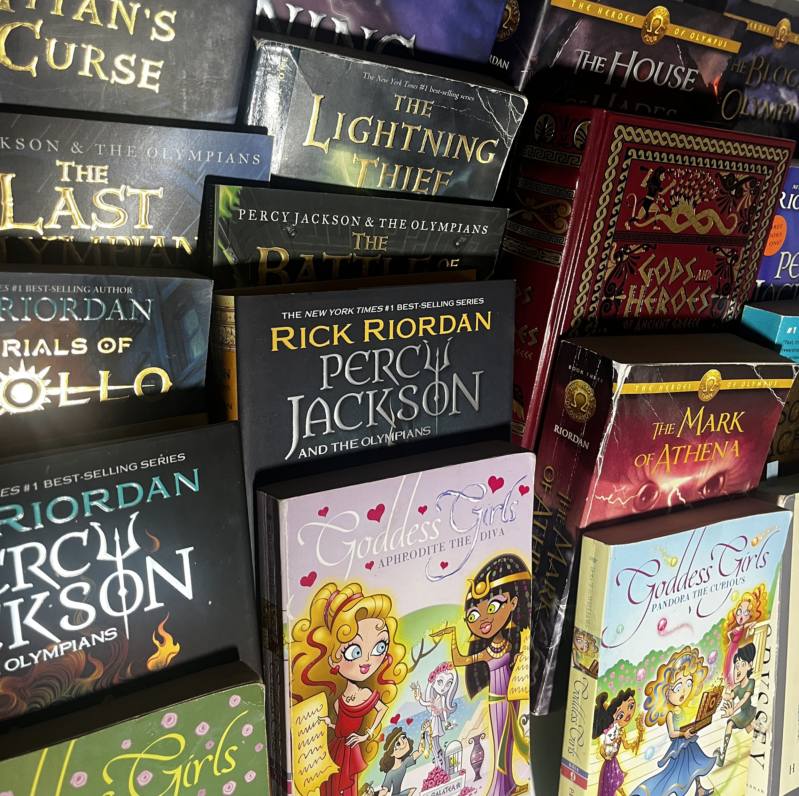

In this image taken by Itsuki Hirano, there is a path alongside a creek from our conversation in class; this was likely taken at the UC Davis arboretum. This image, without context, makes me think of evening walks through nature, strolls throughout the day, or even just a common route taken daily. I think that some interesting aspects of this image are how the tree branches and the creek make this image feel peaceful. Maybe the message isn’t super deep, but I think that the person who is in the distance makes this image more unique and gives it a sense of journey or reaching a destination of some sort. I think that if more images were introduced like this, there should be a variety of different times of the day or maybe different seasons to see how the mood of the images changes. If the focus of the project is about a journey or route, then I think that creating a visual sequence of images that maps out the journey from start to finish would be more interesting and compelling to the user.
Part Two

Nattaly Vargas, 2026
This image shows a small portion of my personal collection of Greek mythology books. This clearly makes a statement on my interest in Greek mythology and ancient stories. I think something you wouldn't know just by looking at my bunch of books is that the books at the bottom, Goddess Girls, were really my first introduction to mythology, and it's what led me to finding the Percy Jackson series in elementary school. Through Percy Jackson, I continued to read series like Heroes of Olympus through middle school. As I grew older and high school came around, I took a break, but once college and university came around, I decided to dive into reading some classics and doing research on the topic of Greek mythology and modern retellings. I think this image of my collection really consists of those different stages of interest that I've gone through and their impact on how I think about storytelling and the relevance of the past with the present. To make this image better and present my interest better, I could take photos of individual book covers, pages, quotes, and art within the books to create a chronological journey of my interest in Greek mythology.
Visual Thinking Strategies Research
The article “10 Intriguing Photographs to Teach Close Reading and Visual Thinking Skills” goes into depth on how important it is to observe images. Gonchar brings light to paying attention to details, context, emotion, and composition in images before interpretation. I became aware that when I look at an image on a website or anything i just take a glance unless it's necessary to look at it longer. Reading this article has taught me the importance of observation, and I tested this with a photography website found on Awwwards. The website is Creamu Photography, which has a very minimalistic and somewhat elegant design and layout. You're immediately introduced to a screen full of scattered images that move as you hover your mouse around. Because images are the main focus of the page, you're drawn to click around, which allows for the expansion of any image that is clicked on. When I did this, I was surprised, but then I decided to apply the concept of the article to my way of viewing these different images.
In Naema Baskanderi’s article, she goes over modals, which, though effective in decluttering the viewport, are often similar to pop-up advertisements that users quickly dismiss and consider “annoying.” One way to counter this negative view on modals is with a term she mentions called the “Escape Hatch,” which means that these modals always have a clear exit method for users, such as an “X,” escape, or cancel button. Another function is that these modals need to be initiated by the user rather than being pop-ups, giving control to the users and reducing frustration. ARIA tags and keyboards are also accessible tools that would help elevate the usability of modals. Finally, Baskanderi mentioned that modals are often hard to add to mobile, meaning that they are used less often to make the user experience smoother.
This article goes over how the way we design digital forms is an important component of user experience. I agree with the idea that to create more effective forms, we need to consider using the "Less is More" theory to keep users engaged and make it easier for them to navigate by reducing the mental load. I really like the strategy of having multiple steps to reduce the creation of large, unattractive forms. To me, labels are very important, and the article reinforces my belief that they are the true navigators for users when filling out a form. The different features, such as the position, proximity, and inline form fields, are the key features we as designers have to make functional to make our forms work as a tool rather than a burden. To me, a good example of this is the Ticketmaster sign-up form. I think that is functional and simple for users to fill out. It's not overly complicated, which means it follows the "Less is More" theory, as the article mentioned.